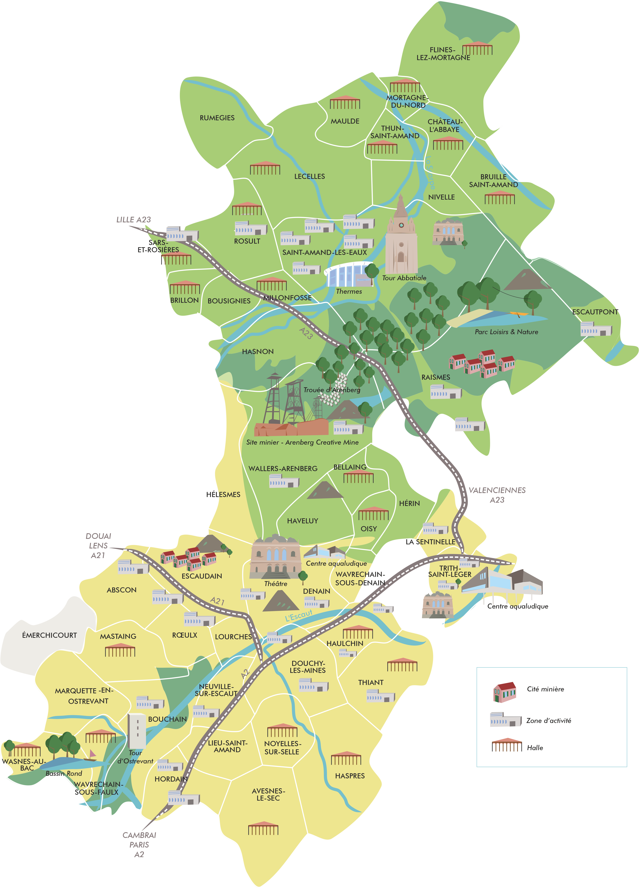

Communes
Découvrez nos charmantes communes locales.
Le territoire de La Porte du Hainaut est réparti sur trois secteurs géographiques. Pour voir la carte de l'emplacement de chaque Hôtel de Ville du territoire de La Porte du Hainaut, cliquez ici.
-
L'Amandinois
Ce secteur est marqué par le phénomène de périurbanisation avec l'installation de nombreux habitants originaires de la métropole lilloise et allant travailler à Lille. La proximité de l'A23 y est pour beaucoup ainsi que le cadre de vie particulièrement accueillant avec une nature préservée. Il se compose des communes de :
- Bousignies
- Brillon
- Bruille-Saint-Amand
- Château-l'Abbaye
- Escautpont
- Flines-lez-Mortagne
- Hasnon
- Lecelles
- Maulde
- Millonfosse
- Mortagne-du-Nord
- Nivelle
- Raismes
- Rosult
- Rumegies
- Saint-Amand-les-Eaux
- Sars-et-Rosières
- Thun-Saint-Amand -
Le Denaisis
Ce territoire est en plein renouveau. Marqué par un passé minier et sidérurgique florissant, le Denaisis relève aujourd'hui la tête et, fort de cette histoire, se tourne vers un futur plus radieux. Il se compose des communes de :
- Bellaing
- Denain
- Escaudain
- Douchy-les-Mines
- Haulchin
- Haveluy
- Hélesmes
- Hérin
- La Sentinelle
- Lourches
- Oisy
- Thiant
- Trith-Saint-Léger
- Wavrechain-sous-Denain
- Wallers-Arenberg -
L'Ostrevant
Ce territoire rural, maillé de petites communes, est le lieu d'implantation du Parc d'activités Jean Monnet et de Sevelnord au coeur d'un territoire verdoyant autour de Bouchain, ville fortifiée et du Bassin Rond, lien vers le Cambrésis. Il se compose des communes de :
- Avesnes-le-Sec
- Abscon
- Bouchain
- Haspres
- Hordain
- Lieu-Saint-Amand
- Marquette-en-Ostrevant
- Mastaing
- Neuville-sur-Escaut
- Noyelles-sur-Selle
- Rœulx
- Wasnes-au-Bac
- Wavrechain-sous-Faulx